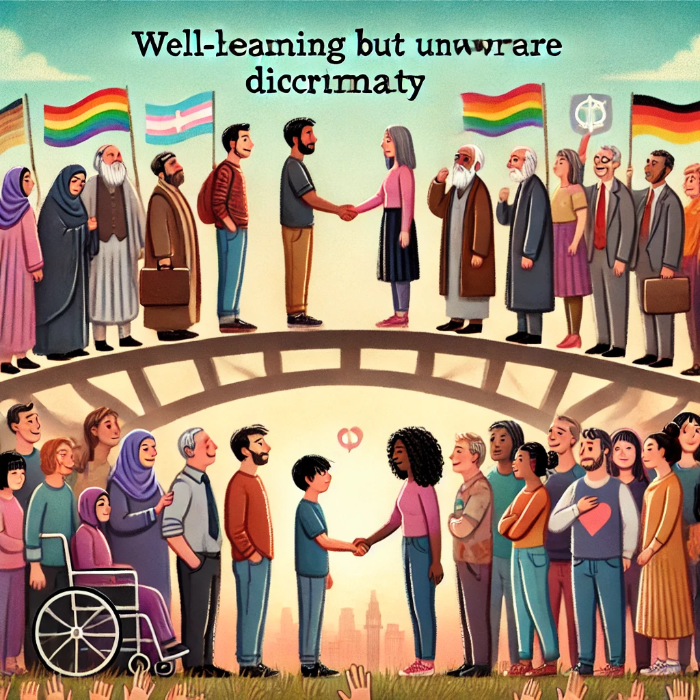

선량한 차별주의자
목차
작가
김지혜
출판연도
2024년
감상평에 대한 AI그림
사회과학 분야에 관심이 많아서 이 책을 읽고 현대사회에 만연한 혐오와 차별에 대해 깊게 생각할 수 있었다.
인문서적을 잘 읽지 않는 사람도 쉽게 읽을 수 있게끔 서술되어 있다.

감상평에 대한 AI평가
✨ 개인적인 경험과 연결 - "사회과학 분야에 관심이 많아서"라고 시작하면서, 책을 읽게 된 배경을 제시했어요. 독자가 책을 접한 맥락을 설명하는 점이 좋아요..
✨ 책의 핵심 메시지를 언급 - "현대사회에 만연한 혐오와 차별"이라는 표현을 사용하여 책이 다루는 주제를 명확히 드러냈어요.
✨ 마무리 문장 추가 - 예를 들어 "이 책을 통해 우리가 무심코 저지르는 차별을 돌아볼 수 있었다. 앞으로도 이런 문제를 더 고민해 보고 싶다." 같은 마무리를 하면 글의 완성도가 높아질 거예요.